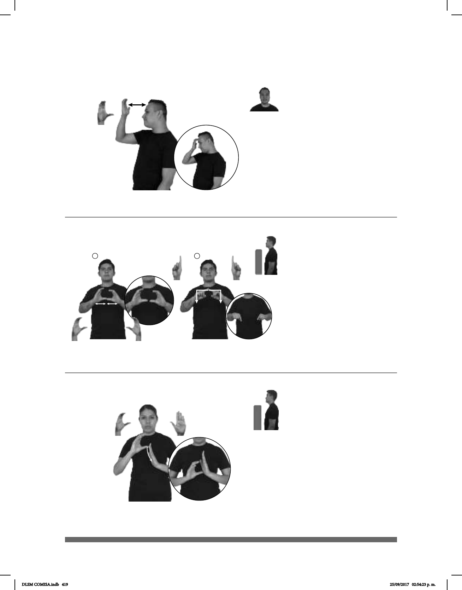

419
1
2
Seña: SM
C.3
Palma hacia adentro.
Sobre la frente.
La MD golpea la frente
repetidamente.
v. tr. Tener una idea
clara acerca de algo que se ha vivido o
experimentado, haber visto a una
persona, tener algún trato o mantener
alguna relación con ella.
(C-70)
___________________________________________neg____
TODA pos-MI FAMILIA pro-YO NO CONOCER pro-ELLOS
No conozco a toda mi familia.
Seña: SC: I. y II. SS
I. Palmas hacia el centro; II.
Las palmas inician hacia afuera y terminan
hacia abajo.
I. A la altura del pecho y II. A la
altura del pecho, los dedos índices
encontrados.
I. Los dedos pulgares se
encuentran y se tocan repetidamente; II. Las
manos parten de un mismo punto y luego se
abren hacia los lados y hacia abajo.
sust. f. Documento o testimonio
con el que se hace constar alguna cosa.
(C-71)
AYER CONSTANCIA SECUNDARIA ellos-DAR-a-mí
Ayer me dieron la constancia de la secundaria.
Seña: SB
MD C.1, MB B-P.2
MD palma hacia la
izquierda, MB palma hacia la derecha.
MD de los dedos a la palma
de MB. MB a la altura del pecho.
La MD simula un salto.
sust. f. Conjunto de normas
y leyes que fundamenta la organización
de un Estado por el que se rigen los
gobernantes y los ciudadanos.
(C-72)
DESPUÉS CIUDAD-DE-MÉXICO TENER pos-SU CONSTITUCIÓN
La Ciudad de México tendrá su propia constitución.
DLSM COMISA.indb 419 25/09/2017 02:54:23 p. m.